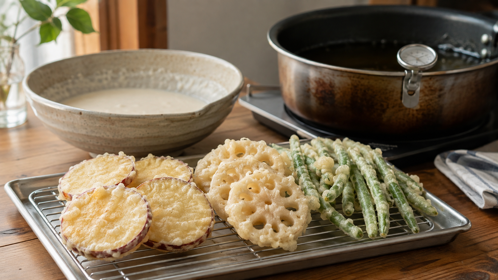

米粉の衣は、サクッと割れる。小麦の網目を作らない天ぷら
天ぷらの衣は、混ぜすぎると重くなる。
そう聞いて、粉が少し残る程度で箸を止めたことはないだろうか。
この注意が大切なのは、主に小麦粉の話だ。米粉へ替えると、同じ心配はかなり小さくなる。米粉では小麦のような粘りの網目ができないからだ。
ただし、米粉を使えば自動的に薄く、油の少ない衣になるわけではない。水の量と衣の付きすぎを外すと、米粉でも重くなる。
今日は、米粉の衣が「軽い」と感じやすい理由を、野菜の天ぷらで確かめてみよう。
今日の結論
天ぷらを歯切れよくしたいなら、うるち米から作った製菓・料理用の米粉を使う。
米粉80gへ冷水80gを加えてよく混ぜ、流れにくければ水を5gずつ足す。具材へ薄くまとわせ、170℃の油で少量ずつ揚げる。
狙うのは「薄い衣」そのものではない。かむと粘って伸びるより、表面からパリッと割れる衣だ。
小麦粉は、水と混ぜると伸びる網目を作る
小麦粉へ水を加えて混ぜると、二種類のたんぱく質がつながり、伸びる網目を作る。この網目をグルテンという。
パンでは、発酵で生じたガスを抱える大切な骨組みになる。一方、天ぷらでは網目が発達しすぎると、衣が弾力を持ち、かんだときに粘りやすくなる。
だから小麦の天ぷら衣では、冷水を使い、混ぜすぎないようにする。
米粉には、この小麦由来の網目を作る組み合わせがない。でんぷんは加熱されると水を抱えて固まるが、小麦衣のように伸びる膜にはなりにくい。そのため、米粉の衣は混ぜても粘りにくく、揚げると表面から割れる食感を作りやすい。
米粉と小麦粉の天ぷら衣を比べた2010年の研究では、米粉衣のほうがサクサク感と総合評価が高く、油を吸いにくかった。米粉の中でも、見かけのアミロース量や、加熱したときの粘り方によって油の吸い方が変わっている。
つまり、違いを作るのは「米粉」という名前だけではない。粉の性質まで効いてくる。
「軽い」は、やわらかいという意味ではない
米粉衣の軽さは、ふわふわの軽さとは少し違う。
2019年の日本調理科学会誌の研究では、うるち米粉の天ぷら衣は、小麦粉衣より表面から硬く壊れる特徴を示した。油の吸収率は低く、水分の蒸発は多かった。水分の蒸発量と、衣が割れるときの力にも強い関係が見られた。
衣の中の水が蒸気になって抜け、その跡に乾いた構造が残る。湿った布より、乾いた薄い紙のほうがパリッと裂けるのに近い。
別の日本の比較試験でも、米粉衣は同じ水分割合の小麦粉衣より硬く、油っぽさが少ないと評価された。
だから、ここでいう軽さは「口に入れた瞬間に消える」ことではない。油っぽく粘らず、歯を入れると短く割れることだ。
米粉でも、衣を厚く付ければ重くなる
ここが一番大事だ。
研究で米粉の油吸収率が低くても、具材へ衣がたくさん付けば、食べる衣の総量は増える。2019年の研究でも、衣の付きやすさまで含めると、実際に食べる油の量は単純には決まらないと注意されている。
衣の付き方は、水の量と粉の細かさで変わる。同じ「米粉」でも、製品によって必要な水は違う。上新粉や白玉粉では粒の大きさや原料の性質が異なるため、この記事では代用しない。
ボウルから持ち上げた衣が、太い塊ではなく細い帯になって流れるくらいを目安にする。具材をくぐらせたあと、一度ボウルの上で余分を落とす。
これだけで、米粉の良さを邪魔しにくくなる。
今日の実験：米粉で揚げる三色野菜天ぷら
なすは使わず、厚みをそろえやすいさつまいも、れんこん、さやいんげんで試す。米粉衣の割れ方を比べやすい組み合わせだ。
材料（2人分）
- 料理・製菓用のうるち米粉 80g
- 冷水 80〜100g
- 塩 1g
- さつまいも 100g
- れんこん 100g
- さやいんげん 6本
- 揚げ油 適量
作り方
- さつまいもとれんこんは8mmほどの輪切りにする。さつまいもは水へ5分さらし、れんこんと一緒に表面の水を布巾や紙でよく拭く。いんげんは筋を取り、長ければ半分に切る。
- 鍋へ油を入れ、温度計で170℃まで温める。粉と水は、油が温まってから合わせる。
- ボウルへ米粉80g、冷水80g、塩を入れ、粉の塊がほぼなくなるまで混ぜる。衣が太く落ちるなら、水を5gずつ足す。
- 野菜へ米粉をほんの薄くまぶし、余分な粉を落とす。衣を付け、ボウルの上で一呼吸置いてから油へ入れる。
- 一度に入れすぎず、170℃を大きく下回らないように揚げる。いんげんは約2分、れんこんは2〜3分、さつまいもは3〜4分を目安にし、泡が細かくなって衣が乾いたら網へ取る。
- 重ねずに網へ並べ、2分ほど油を切る。塩を添え、熱いうちに食べる。
時間は目安だ。さつまいもは、箸や竹串が中心まで無理なく通ることも確かめる。
小麦粉と比べるなら、水を同じにしない
自由研究のように比べるなら、米粉40gと薄力粉40gで二つの衣を作る。
ただし、水をどちらも40gにそろえると、粉の違いではなく「粘度の違い」を強く比べることになる。先ほどの2019年の研究でも、適した水分量は薄力粉と米粉で違っていた。
そこで、米粉は水40〜50g、薄力粉は水60〜65gから始め、どちらも細い帯で流れる程度に合わせる。具材の種類、厚さ、油温、揚げ時間をそろえ、次の三つを見る。
- かんだ瞬間に衣が割れるか、曲がるか
- 網に置いて5分後も音が残るか
- 紙へ移したときの油染みがどう違うか
紙の油染みは正確な油量ではない。ただ、家庭で二つの衣を同じ条件に近づけて観察する目安にはなる。
揚げ物では、水を油へ近づけすぎない
米粉の衣に水は必要だが、具材の表面に余分な水滴が残っていると、熱い油の中で急に蒸気になり、油を跳ねさせる。
米国農務省の揚げ物安全案内は、調理中に鍋から離れず、具材を詰め込みすぎず、油を十分に冷ましてから片付けるよう勧めている。油火災へ水をかけてはいけない。
政府広報オンラインも、揚げ物中は安全装置があってもコンロを離れないよう注意している。
具材は水気を拭き、長い袖や紙類を火から離す。油は鍋の深さの3分の1程度までにし、ふたを手の届く場所へ用意する。
米粉は「魔法の粉」ではなく、壊れ方が違う粉
米粉の衣が軽く感じやすいのは、小麦のような伸びる網目を作らず、水分が抜けたあとに硬く短く割れやすいからだ。
ただし、米粉の品種、でんぷんの性質、たんぱく質量、粉の細かさ、水の量、衣の厚さで結果は変わる。油を吸いにくいという研究結果を、そのまま「必ず低カロリー」と読み替えることもできない。
まずは米粉80gと冷水80gから始める。衣を薄く落とし、170℃で少量ずつ揚げる。
小麦衣の「混ぜない緊張」から離れると、天ぷら作りは少し気楽になる。そして、かんだ瞬間の音はきちんと変わる。
参考文献
- Nakamura S, Ohtsubo K. Influence of Physicochemical Properties of Rice Flour on Oil Uptake of Tempura Frying Batter. Bioscience, Biotechnology, and Biochemistry. 2010;74(12):2484-2489. https://doi.org/10.1271/bbb.100584
- 米粉を用いた揚げ衣の重量変化と食味特性. 日本調理科学会大会研究発表要旨集. 2010. https://doi.org/10.11402/ajscs.22.0.164.0
- 雑穀粉の天ぷら衣への利用適性―品質及び嗜好性からの検討―. 日本調理科学会誌. 2019;52(6):376-385. https://www.jstage.jst.go.jp/article/cookeryscience/52/6/52_376/_pdf/-char/ja
- Shih F, Daigle K. Oil Uptake Properties of Fried Batters from Rice Flour. Journal of Agricultural and Food Chemistry. 1999;47(4):1611-1615. https://doi.org/10.1021/jf980688n
- Dogan SF, Sahin S, Sumnu G. Effects of soy and rice flour addition on batter rheology and quality of deep-fat fried chicken nuggets. Journal of Food Engineering. 2005;71(1):127-132. https://doi.org/10.1016/j.jfoodeng.2004.10.028
- U.S. Department of Agriculture, Food Safety and Inspection Service. Deep Fat Frying. https://www.fsis.usda.gov/food-safety/safe-food-handling-and-preparation/food-safety-basics/deep-fat-frying
- 政府広報オンライン. 住宅火災から命を守る10のポイント 「逃げ遅れ」を防ぐために. https://www.gov-online.go.jp/article/201412/entry-9576.html
※本記事は家庭調理の一般情報であり、米粉衣の油量やエネルギー量を保証するものではない。米粉製品の表示と使用方法も確認すること。